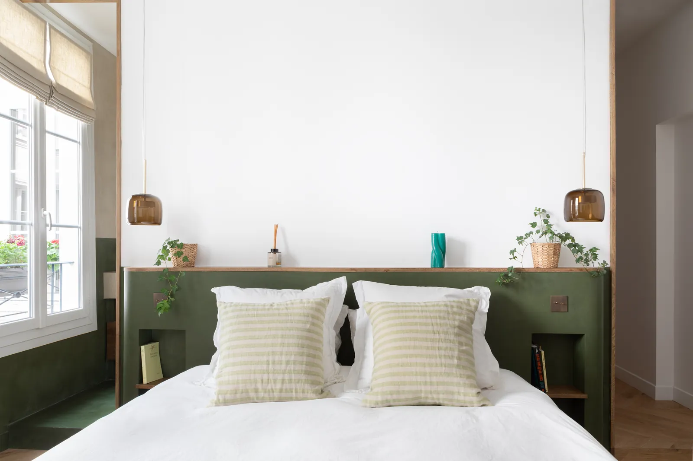

Stouls Studio / Glossary / Chambre de bonne
What is a chambre de bonne?
A chambre de bonne is a former servant’s room under the roof of a Paris apartment building. Most measure 6 to 12 m² (65 to 130 sq ft) and are reached by a separate service staircase.
Stouls Studio, Paris. Updated November 15, 2026.
Why do Paris buildings have them?
The apartment buildings put up in Paris in the second half of the nineteenth century were built for households with live-in staff. The family lived on the main floors. The maid, la bonne, slept in a small room on the top floor, under the zinc roof.
Each room belonged to an apartment below. A narrow back staircase, the escalier de service, linked the kitchens to the top floor so staff did not use the main stairs.

What is one like today?
- Top floor, often the seventh or eighth (6th or 7th floor in French counting, where the ground floor is zero), frequently without an elevator to that level.
- A sloping ceiling and a small window or skylight, sometimes with a view over the rooftops.
- Originally no bathroom: a shared toilet and faucet on the landing.
- Sold with the apartment it belonged to, or separately as its own lot.
What is the minimum size to rent one out?
French rules on decent housing require a main room of at least 9 m² (97 sq ft) with 2.20 m (7 ft 3 in) of ceiling height, or a volume of at least 20 m³ (706 cu ft). A room below that can be owned and used, but not rented as someone’s home.
What can be done with a chambre de bonne?
- A guest room or office for the apartment downstairs.
- Two or three joined into a studio, with a real bathroom and kitchenette.
- Storage that frees a room in the main apartment.
The limits are almost always the drainage and the building’s rules. Before buying an apartment for its maid’s room, have someone check where waste water can go and what the copropriété (the building’s co-ownership) has allowed before. I give you my opinion on both at the visit. How I assess an apartment before you make an offer.
Short answers
What is a chambre de bonne?
It is a former servant’s room on the top floor of a Paris apartment building. It usually measures 6 to 12 m² (65 to 130 sq ft) and has its own service staircase.
Can you live in a chambre de bonne?
You can own and use one of any size. To rent it out as a home it must have at least 9 m² (97 sq ft) of floor area with a ceiling height of 2.20 m (7 ft 3 in), or a volume of 20 m³ (706 cu ft).
Can several chambres de bonne be joined together?
Often, yes. Joining two or three neighboring rooms into a studio is a common Paris project. It needs the building’s agreement when shared walls, hallways or pipes are involved.
Does a chambre de bonne have a bathroom?
Originally no. There was a shared toilet and a faucet on the landing. Many have since been equipped with a shower and a toilet, when the building’s drainage allows it.